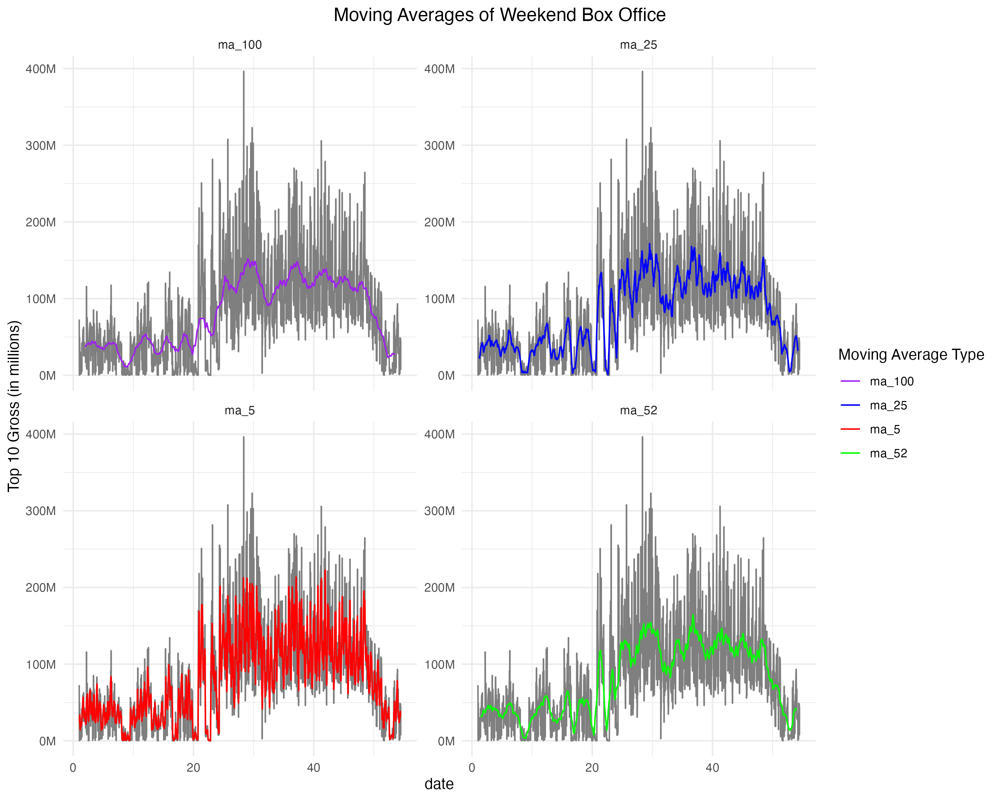
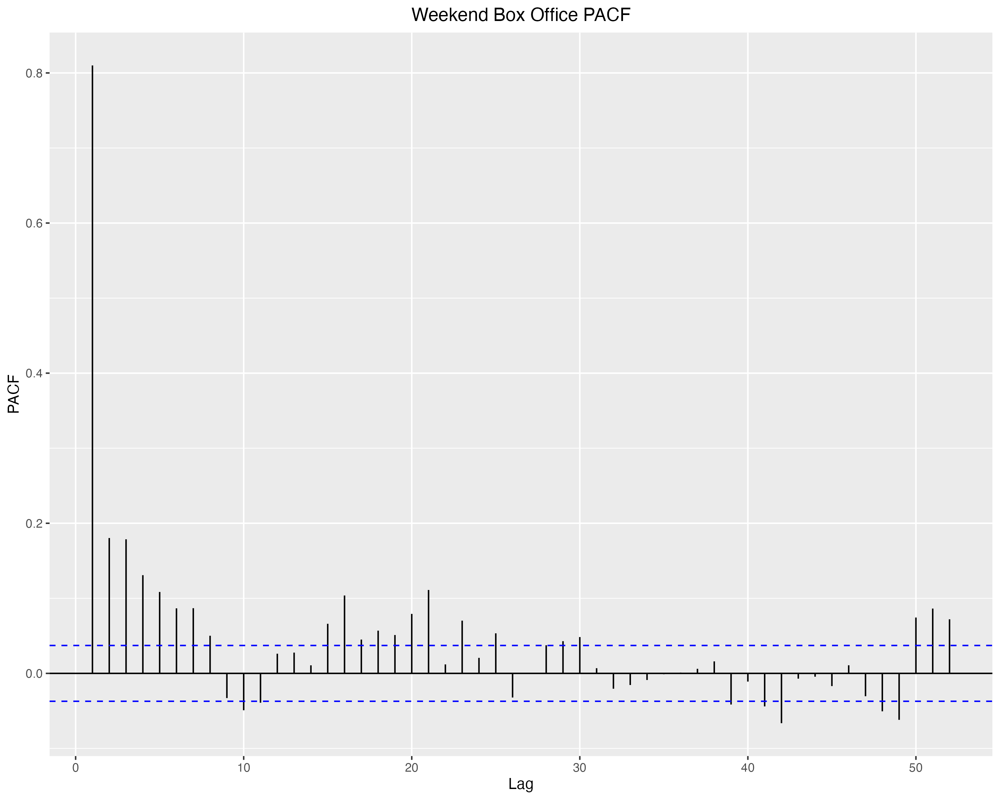

Exploratory Data Analysis
Lag plots

The graph above depicts a series of lag plots for the “Opening Weekend Box Office” data. Lag plots are scatter plots of a time series against a lag of itself, and they provide a useful graphical representation of whether a dataset (or time series) is random or not. A dataset is considered random if the points in the lag plot are randomly scattered around the horizontal axis, without any discernible pattern. In contrast, if there’s a structure in the lag plot, the dataset can be considered to exhibit some form of serial correlation.
In this particular visualization, four lag plots are shown, corresponding to lags of 1, 15, 30, and 52 (weeks). For the lag 1 plot, there’s a clear linear trend, indicating strong serial correlation from one data point to the next. This suggests that the box office data of a particular weekend is closely related to the previous weekend’s data. As the lag value increases (15, 30, and 52), the structure in the plots starts to diminish. While there’s still some correlation at lag 15, it becomes weaker at lags 30 and 52. This implies that the immediate past (a few weeks prior) has a more significant impact on current weekend box office performance than the more distant past.
The implications for time series modeling here are multifaceted. First, since there’s a noticeable correlation at lag 1, autoregressive (AR) terms would be significant in an ARIMA model. Given the diminishing correlation in higher lags, differencing the series might be beneficial to make it stationary, which is often a prerequisite for ARIMA modeling. Additionally, the weakening correlations as the lag increases suggest that recent historical data will have more predictive power than older data. This insight can guide feature engineering for machine learning-based approaches, where recent past values might be given higher importance. Lastly, considering the temporal patterns, special events, movie releases, or holidays might be driving specific peaks or troughs in the box office data, and integrating such external factors into the model might enhance its predictive accuracy.
Decomposed Series

Figure 2 displayed represents the decomposition of a multiplicative time series into its individual components: data, trend, seasonal, and remainder. Time series decomposition is a statistical method used to deconstruct a time series into these components, making it easier to identify patterns and irregularities.
Data: The topmost panel displays the raw time series data. We observe fluctuations and variability, which makes it challenging to discern a clear pattern or trend merely by looking at this raw data. The values range between near 0M to roughly 400M, showcasing the volatility and potential seasonality in the data.
Trend: The second panel presents the trend component of the data. The trend represents the underlying movement in the series, disregarding the noise or short-term fluctuations. In this case, there’s a slight upward trend, indicating an increase in the data’s values over time. There are also noticeable fluctuations in the trend, suggesting that while the general direction might be upward, there are periods of decline and rise.
Seasonal: The third panel showcases the seasonal component. In time series analysis, seasonality refers to periodic fluctuations. For instance, sales might be consistently high during Christmas or summer every year. The black bars indicate a strong and consistent seasonal pattern. The repetition at fixed intervals underscores the presence of a well-defined seasonality in the data. Another reason for this very “all over the place” behavior in seasonality is the fact that there are thousands of weeks (over 40 years worth od data). A sample version (only for a year) will be conducted under this section to analyze seasonality at a more granular level.
Remainder (or Residual): The bottom panel represents the residuals or the remainder of the data once the trend and seasonality have been extracted. It essentially captures the noise or the unpredictability in the data. Observing this plot, there are sporadic spikes, suggesting that while most of the data’s behavior can be explained by its trend and seasonality, there are still some unexplained or unexpected fluctuations.
Overall this particular time series exhibits a clear seasonality, a slightly upward trend, and sporadic unexpected fluctuations. Recognizing these components is beneficial for businesses or analysts as they can plan and strategize based on the predictable pattern (trend and seasonality) and also allocate resources to investigate the cause of any anomalies or unexpected fluctuations (residuals).
Sampled Decomposed Series

Figure 3 is the same exact analysis done in Figure 2 but only for one year worth of data, with the intent of reducing the data points we are analyzing to have a clearer view at the seasonality of our data. The figure illustrates distinct cyclical variations in weekly box office returns throughout 2020. These oscillations appear to be periodic, suggesting that certain weeks consistently witnessed higher or lower box office returns.
The regularity of these oscillations might be linked to various factors specific to the film industry. For instance, certain times of the year, such as holiday seasons, school vacations, or periods associated with major film releases, could see heightened box office activity. Conversely, periods with no major releases or outside of vacation times might register lower returns. The consistent peaks and troughs indicate that there are predictable times in the year when movies are either raking in higher ticket sales or experiencing a slump.
The magnitude of the seasonal component’s oscillations seems relatively consistent across the time series, suggesting that while the exact figures might change, the pattern of highs and lows remained steady throughout the year.
For film industry stakeholders, such a pronounced seasonal pattern is invaluable. Distributors, production houses, and theater chains can leverage this data to strategically time their film releases, marketing pushes, or even theater maintenance downtimes.
Moving Averages

Figure 4 presents a comparative analysis of the moving averages for the weekend box office data across different windows of time. Each subplot offers a distinct moving average, computed over periods of 5, 25, 52, and 100 days, respectively.
At first glance, the ma_5 (red line) captures the short-term fluctuations of the box office performance with high fidelity. It is closely aligned with the raw data, highlighting the immediate ups and downs of weekend revenues. Such a short window moving average is typically sensitive to sudden changes, making it ideal for detecting rapid shifts in data. However, this can also mean that it’s more prone to noise, which might not always be indicative of an overarching trend.
In contrast, the ma_100 (purple line) provides a smoother, longer-term perspective on box office performance. This curve abstracts away short-term volatility, offering a more consolidated view that emphasizes the broader trajectory of revenues over the given period. Such a depiction is instrumental in understanding overarching trends, seasonality, and potential cyclic behaviors.
The ma_25 (blue line) and ma_52 (green line) offer intermediate perspectives, balancing between capturing immediate changes and identifying longer-term patterns. Notably, the ma_52, representing a year’s worth of weeks, gives insights into annual seasonality, highlighting periods of consistently high or low revenues.
In the realm of the film industry, such moving averages serve pivotal roles. For instance, the ma_5 can inform immediate reactions, such as marketing boosts or schedule changes, in response to sudden shifts in viewer interest. Longer-term averages, like ma_100, can aid in strategic planning, providing insights into best times for big-budget releases or anticipating annual slumps. When combined, these moving averages offer a comprehensive overview, allowing stakeholders to make informed decisions, whether they’re looking to address immediate concerns or strategize for the future.
ACF and PCF

Figure 5 showcases the autocorrelation function (ACF) for the weekend box office data. Autocorrelation measures how a series is correlated with its past values. Essentially, it provides insights into the relationship between an observation and a lagged version of itself over successive time intervals. The “Lag” on the x-axis indicates the number of time periods separating the two sets of values being compared.
At the very beginning (lag 0), the autocorrelation is 1, as any dataset is perfectly correlated with itself. As we move to the right, the chart depicts how the box office performance is related to its past values over weekly lags. The fact that the values remain relatively high for the initial lags and gradually taper off indicates that the box office data for a particular weekend is somewhat influenced by the recent past weekends. This could imply that the performance of movies tends to have momentum—either carrying forward strong or weak performances from the previous weeks.
The blue dashed lines indicate the significance threshold. Correlations lying outside these lines are statistically significant, meaning they are likely not a result of random fluctuations. Notably, many lags have bars surpassing this threshold, especially in the initial phase, signifying meaningful autocorrelation. This suggests that a significant amount of the variability in the box office data can be predicted from its past values.
For the film industry, understanding this autocorrelation is valuable. If recent weeks’ box office performances have a strong influence on subsequent weeks, then marketers, distributors, and theatre owners can strategize accordingly. For instance, if a particular genre or a movie is performing exceptionally well in consecutive weeks, it might be beneficial to prolong its screening, capitalize on marketing momentum, or release similarly themed movies. Conversely, if a film starts to underperform, stakeholders might consider changing strategies swiftly, considering the influence of recent data on the immediate future.

On the other hand, Figure 6 us displays the partial autocorrelation function (PACF) for weekend box office data. PACF is a crucial diagnostic tool in time series analysis, specifically used to ascertain the relationship between an observation and its lag, after removing the effects of intermediate lags. In simpler terms, while ACF measures raw correlations, PACF measures correlations after accounting for any shared correlations with the intermediate time steps.
Observing the chart, the y-axis denotes the partial autocorrelation value and the x-axis indicates the number of lags. The bar at lag 0 is always 1 since an observation is always perfectly correlated with itself. The subsequent bars provide the partial autocorrelation for each lag. Notably, the majority of the lags appear to have bars that fall within the blue dashed lines, which depict the significance threshold. PACF values within these boundaries are generally considered not statistically significant, implying they could arise from random variations.
In the context of the box office data, a few specific lags have partial autocorrelations that surpass the significance thresholds, particularly in the initial lags. This suggests that, while there’s some predictability in the data based on very recent past weekends, the influence of more distant past weekends is less clear, after accounting for more recent data.
ADF Test
The Augmented Dickey-Fuller (ADF) test is a statistical test commonly used to test whether a time series has a unit root, i.e., it is non-stationary. A unit root suggests that the series might exhibit a systematic pattern over time, which can be a problem in many statistical modeling techniques. Ideally, for modeling purposes (like ARIMA), it’s often desired that time series data be stationary, meaning its properties do not depend on the time at which the series is observed.
Running the data on my data, i got a value of -6.8219, strongly negating the null hypothesis of a unit root, which implies stationarity. This is further bolstered by the p-value of 0.01, which is a robust evidence against the series having a unit root, suggesting the acf series’ stationarity.
Given this, the alternative hypothesis, which posits that the data is stationary, is preferred. Essentially, the ADF test result signals that your acf series is stationary, implying that differencing might be unnecessary for removing non-stationary patterns.